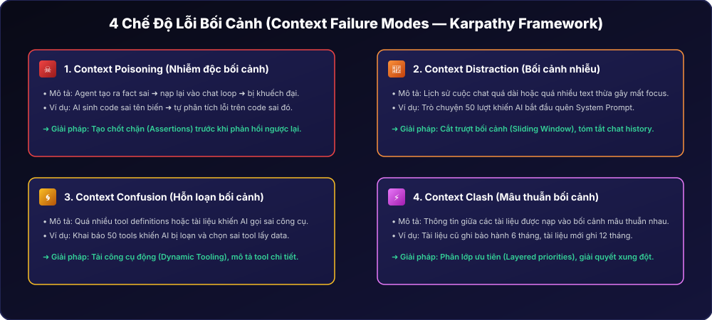
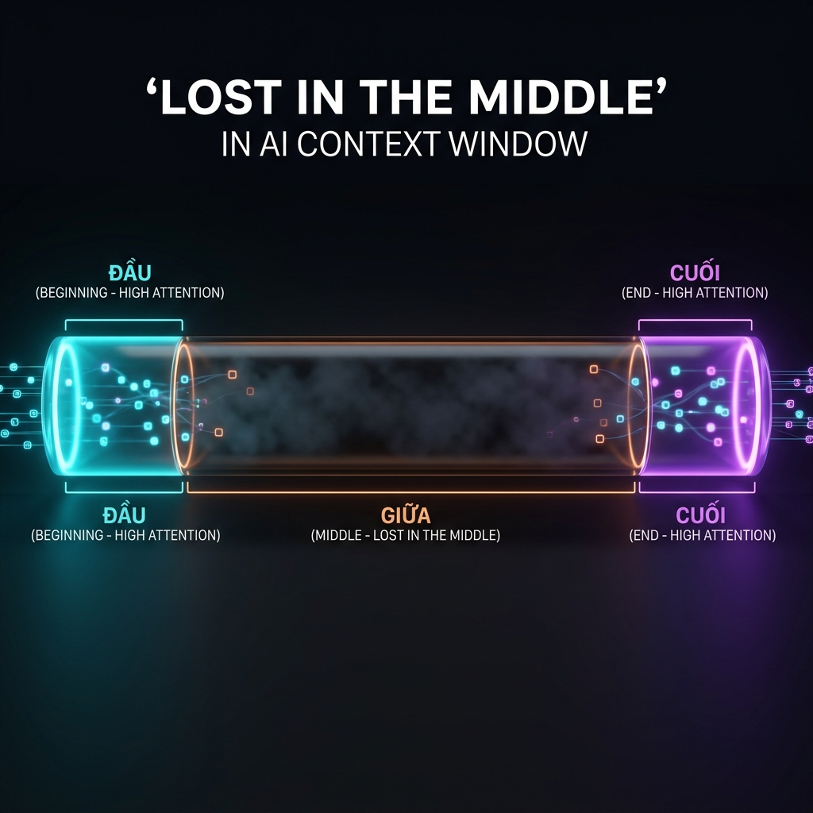
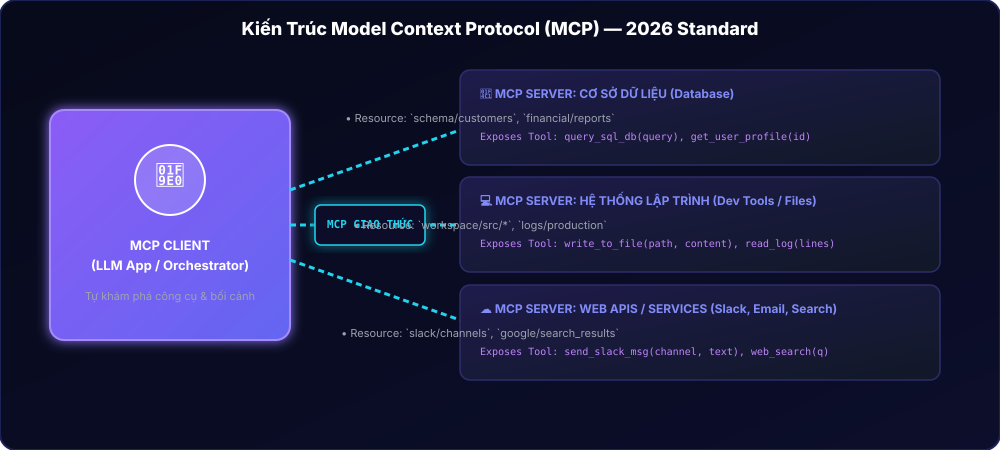
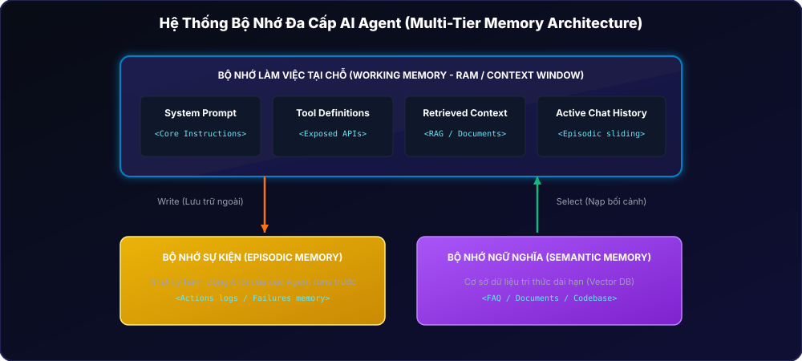
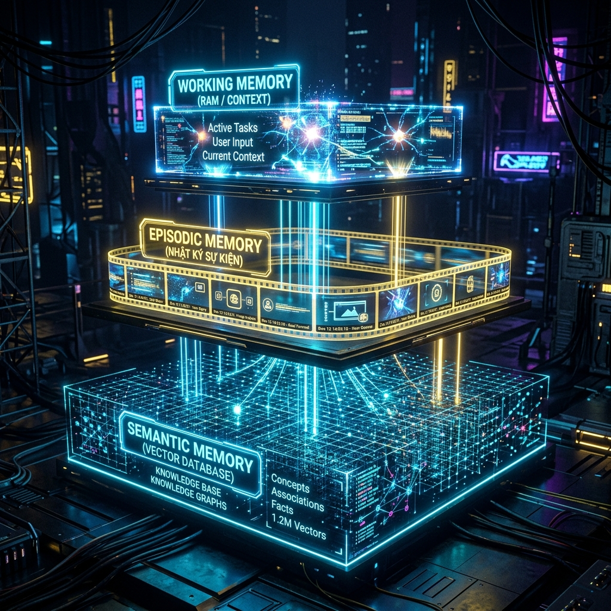
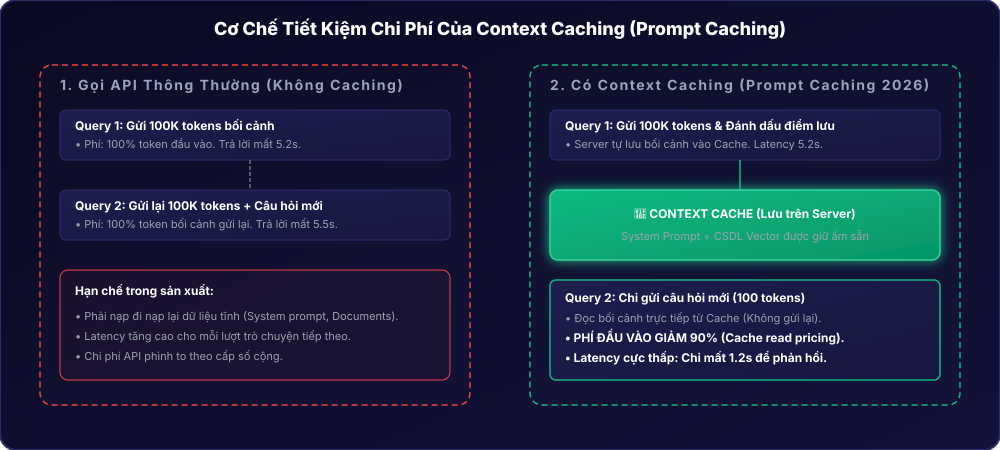
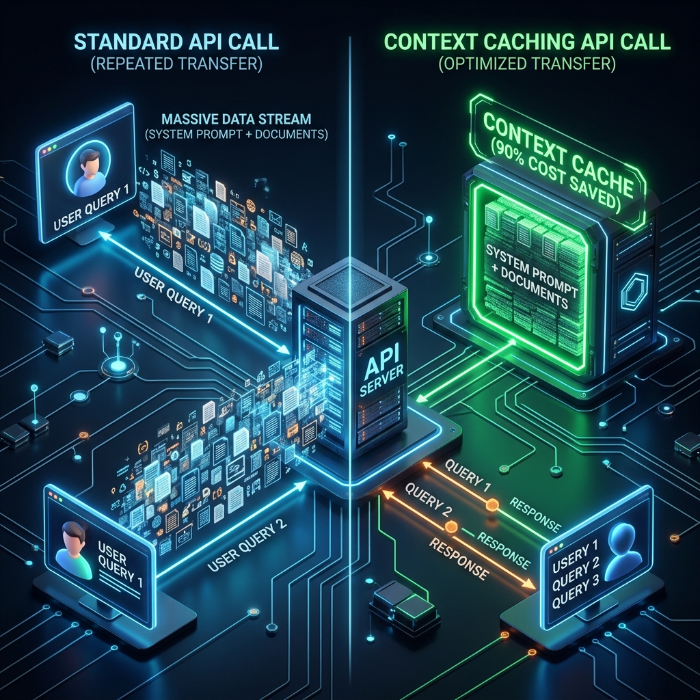

Session 04 — Context Engineering
1.1 Cơ chế Lost in the Middle & Phân bổ Token
Cửa sổ ngữ cảnh (Context Window) hoạt động giống như RAM của máy tính. Việc quản lý hiệu quả nguồn tài nguyên này quyết định trực tiếp đến độ chính xác và chi phí API. Các mô hình hiện đại có xu hướng gặp hiện tượng Lost in the Middle (bỏ quên thông tin ở giữa bối cảnh) do đặc tính của cơ chế Attention. Do đó, các thông tin quan trọng luôn cần được xếp ở đầu hoặc cuối bối cảnh nạp vào.
Một kiến trúc bối cảnh tốt phân bổ tài nguyên hợp lý: System Prompt (~5-10%), Tool Schemas (~5-10%), Retrieved Context (~40-50%), Chat History (~15-25%), User Query (~5%), và khoảng trống dành cho Output (~10-20%).
1.2 4 Lỗi Bối Cảnh (Context Failure Modes) Theo Andrej Karpathy
Karpathy đã đúc kết ra 4 Failure Modes chính dẫn đến sự thất bại của các AI Agent dài hạn:
- Context Poisoning: Lỗi sai của vòng lặp trước nạp lại vào bối cảnh vòng sau và bị khuếch đại lên.
- Context Distraction: Lịch sử chat quá dài hoặc tài liệu nhiễu khiến LLM bị xao lãng khỏi mục tiêu chính.
- Context Confusion: Cung cấp quá nhiều định nghĩa công cụ hoặc tài liệu khiến AI gọi nhầm tool hoặc chọn sai hành động.
- Context Clash: Thông tin mâu thuẫn giữa các tài liệu được nạp vào bối cảnh.


Thực hành: Khắc phục lỗi Context Distraction
Yêu cầu: Nhận diện bối cảnh lịch sử chat bị quá tải và áp dụng chiến thuật tóm tắt (compaction) để giữ lại thông tin cốt lõi.
System Prompt: Bạn là trợ lý tài chính chỉ tư vấn về chứng khoán.
User: Chào bạn.
Assistant: Chào bạn, tôi có thể hỗ trợ gì về chứng khoán hôm nay?
User: Thời tiết hôm nay đẹp quá nhỉ, tôi định đi chơi.
Assistant: Vâng, thời tiết đẹp thật. Nhưng nếu bạn có thời gian rảnh, chúng ta có thể xem xét thị trường chứng khoán hôm nay có nhiều biến động đấy.
User: Nhà bạn ở đâu thế?
Assistant: Tôi là một trợ lý AI, không có ngôi nhà vật lý nào cả.
[... 40 lượt chat nói về thời tiết, ăn uống, phim ảnh ...]
User: Thế mã VNM hiện tại có xu hướng gì?System Prompt: Bạn là trợ lý tài chính chỉ tư vấn về chứng khoán.
<chat_summary>
Người dùng đã chào trợ lý và có một cuộc trò chuyện ngắn ngoài chủ đề về thời tiết và cuộc sống cá nhân. Trợ lý đã giữ nguyên định hướng phục vụ chứng khoán.
</chat_summary>
User: Thế mã VNM hiện tại có xu hướng gì?Bài tập Lesson 4.1
- Thiết kế Context Budget: Xây dựng bảng cấu hình phân bổ token (System Prompt, History, RAG, Output) cho một chatbot tư vấn luật với giới hạn context window nghiêm ngặt là 32,000 tokens.
- Phân tích Case Study: Viết một báo cáo ngắn (200-300 từ) phân tích một sự cố AI Agent thực tế mà bạn từng gặp phải, phân loại lỗi đó thuộc về Failure Mode nào trong 4 loại trên và đề xuất giải pháp sửa đổi cụ thể.
2.1 Luồng RAG Nâng Cao
Retrieval-Augmented Generation (RAG) thực hiện lấy dữ liệu từ bên ngoài nạp vào cửa sổ ngữ cảnh trước khi LLM bắt đầu sinh văn bản. Nó bao gồm các bước: Nhận Query ➜ Nhúng Vector (Embedding) ➜ Tìm kiếm độ tương đồng (Vector Search) ➜ Tái xếp hạng (Reranking) ➜ Nhúng vào bối cảnh ➜ Sinh câu trả lời.
2.2 Model Context Protocol (MCP) — Giao thức kết nối mở
Năm 2026, **Model Context Protocol (MCP)** do Anthropic khởi xướng đã trở thành tiêu chuẩn công nghiệp giống như **cổng USB-C dành cho AI**. MCP tách biệt AI Client và Data Sources bên ngoài. Nhờ vậy, nhà phát triển chỉ cần dựng một MCP Server một lần duy nhất là mọi MCP Client tương thích (như Cursor, Claude Desktop, LangGraph) đều có thể kết nối và tự động khám phá (auto-discover) tài liệu hoặc công cụ của server đó.
Giao thức **A2A (Agent-to-Agent)** của Google đóng vai trò bổ trợ cho MCP, giúp chuẩn hóa việc giao tiếp và ủy thác tác vụ giữa các agent với nhau thay vì chỉ kết nối agent với tool.

Thực hành: Tạo MCP Server đơn giản bằng Python FastMCP
Kịch bản: Khởi tạo một MCP Server cung cấp cho AI công cụ lấy log tệp tin hệ thống cục bộ an toàn.
# Cài đặt: pip install fastmcp
from fastmcp import FastMCP
# Khởi tạo MCP Server mang tên "FileInspector"
mcp = FastMCP("FileInspector")
@mcp.tool()
def read_local_log(file_path: str) -> str:
"""Đọc tệp tin log cục bộ. Chỉ dùng khi cần phân tích log hệ thống."""
try:
with open(file_path, "r", encoding="utf-8") as f:
lines = f.readlines()
# Chỉ đọc 50 dòng cuối để tránh làm tràn bối cảnh của LLM
return "".join(lines[-50:])
except Exception as e:
return f"Lỗi đọc file: {str(e)}"
if __name__ == "__main__":
mcp.run()Bài tập Lesson 4.2
- Thiết kế Kiến trúc RAG + MCP: Vẽ sơ đồ khối mô tả cách một AI Agent trả lời câu hỏi về báo cáo tài chính của khách hàng. Sơ đồ phải thể hiện rõ: User ➜ MCP Client ➜ RAG Server (MCP Server) ➜ Vector DB ➜ Trả kết quả bối cảnh ➜ LLM sinh câu trả lời.
3.1 Hệ thống bộ nhớ AI Agent
Một AI Agent chạy lâu dài (long-running) đòi hỏi kiến trúc bộ nhớ đa tầng:
- Working Memory: Cửa sổ ngữ cảnh xử lý các token hiện hành (RAM).
- Episodic Memory: Ghi lại toàn bộ chuỗi hành động và nhật ký lỗi ở các lượt chạy trước để sửa sai.
- Semantic Memory: Tri thức chung của hệ thống được lấy qua RAG hoặc Vector Database.
3.2 4 Trụ Cột của Context Engineering
Quy chuẩn thiết kế bối cảnh năm 2026 dựa trên 4 trụ cột:
| Trụ cột | Hành động kỹ thuật | Mục tiêu đạt được | Ví dụ thực tế |
|---|---|---|---|
| 1. Write (Ghi ngoại vi) | Lưu thông tin ra cơ sở dữ liệu ngoài. | Giải phóng token bối cảnh tại chỗ, giảm nhiễu. | Lưu thông tin khách hàng vào database thay vì giữ trong chat history. |
| 2. Select (Lọc đưa vào) | Chỉ nạp đúng tài liệu cần thiết qua RAG. | Tránh lỗi Lost in the Middle và nhiễu bối cảnh. | Chỉ truy xuất 3 tài liệu hướng dẫn khớp với câu hỏi của khách. |
| 3. Compress (Nén thông tin) | Tóm tắt các hội thoại cũ hoặc rút trích dữ liệu dạng JSON. | Tăng mật độ tín hiệu thông tin (Signal Density). | Tóm tắt 10 câu chat cũ thành một dòng mô tả ý định hoàn tiền. |
| 4. Isolate (Cô lập bối cảnh) | Tách biệt môi trường cho các sub-agents chuyên biệt. | Ngăn chặn lỗi xung đột chỉ dẫn hoặc loạn công cụ. | Agent viết code kiểm thử không nạp các tool gửi email hoặc thông tin thanh toán. |


Thực hành: Thiết lập cơ chế Cô Lập Bối Cảnh (Isolate Pattern)
Yêu cầu: Cấu hình 2 sub-agent hoạt động biệt lập để hỗ trợ khách hàng mà không bị nhiễu chéo (crosstalk) thông tin.
Bạn là Agent chuyên phân tích log hệ thống. Nhiệm vụ của bạn là đọc tệp tin logs được truyền vào, tìm kiếm mã lỗi E100-E199 và trả về tóm tắt nguyên nhân lỗi.
RÀNG BUỘC: Bạn KHÔNG được tiếp cận thông tin cá nhân hoặc gói cước tài chính của khách hàng. Chỉ tập trung vào phân tích kỹ thuật.Bạn là Trợ lý CSKH. Nhiệm vụ của bạn là trò chuyện thân thiện với người dùng và tư vấn giải pháp.
Bạn sẽ nhận được tóm tắt phân tích kỹ thuật từ Agent A. Hãy sử dụng tóm tắt đó để giải thích dễ hiểu cho khách hàng.
RÀNG BUỘC: Bạn KHÔNG được tự đọc logs hệ thống trực tiếp mà bắt buộc phải chờ kết quả từ Agent A.Bài tập Lesson 4.3
- Thiết kế hệ thống AI Tutor: Áp dụng 4 trụ cột của Context Engineering để viết tài liệu thiết kế hệ thống bối cảnh cho một trợ lý AI dạy tiếng Anh. Xác định rõ: Dữ liệu nào cần Write, tài liệu nào cần Select, khi nào cần Compress lịch sử học tập, và các sub-agent nào cần được Isolate.
4.1 Context Design Patterns
Trong thực tế phát triển phần mềm AI, các mẫu thiết kế bối cảnh được áp dụng để nâng cao độ Steerability:
- Layered Context: Sắp xếp các tầng bối cảnh theo thứ tự ưu tiên (System Instructions ➜ Dynamic Context ➜ History ➜ Query).
- Dynamic Context Injection: Lọc ý định người dùng bằng bộ phân loại nhanh trước, từ đó chỉ chọn nạp các phần tài liệu tương ứng.
- Context Routing: Hướng câu hỏi của người dùng tới các nguồn bối cảnh hoặc cơ sở dữ liệu tối ưu nhất.
4.2 Tối ưu hóa đột phá: Context Caching
Năm 2026, **Context Caching** (Prompt Caching) trở thành tiêu chuẩn trên các cổng API lớn như Anthropic hay Google Gemini. Khi nạp một tài liệu khổng lồ (System Prompt dài, tài liệu luật, hoặc mã nguồn dự án), máy chủ API sẽ tự lưu trữ bối cảnh này vào Cache. Ở các câu hỏi tiếp theo, API chỉ đọc trực tiếp từ cache mà không cần gửi lại và tính toán lại từ đầu. Việc này giúp giảm từ 50% đến 90% chi phí API và giảm thời gian phản hồi (latency) xuống từ 2 đến 3 lần.
"The best prompt is no prompt — just great context." Khi bối cảnh được thiết kế đủ tốt và đầy đủ thông tin, AI sẽ tự đưa ra câu trả lời chuẩn xác mà không cần các kỹ thuật viết prompt dỗ dành phức tạp.


Thực hành: Thiết lập điểm lưu Cache (Anthropic Style)
Yêu cầu: Khai báo cấu trúc API nạp tài liệu siêu dài và gán nhãn điểm lưu cache (breakpoint) giúp tối ưu hóa chi phí cho các lượt chat tiếp theo.
{
"model": "claude-3-5-sonnet-20241022",
"messages": [
{
"role": "user",
"content": [
{
"type": "text",
"text": "[Đây là tài liệu quy trình vận hành bảo mật hệ thống fintech dài 50,000 từ...]",
// Gán nhãn breakpoint lưu cache tại đây
"cache_control": {"type": "ephemeral"}
},
{
"type": "text",
"text": "Hãy tìm kiếm quy định về thời gian tự động đổi mật khẩu định kỳ của kỹ sư hệ thống."
}
]
}
]
}Bài tập Lesson 4.4
- Viết Tài Liệu Kiến Trúc Bối Cảnh (Context Architecture Document): Hãy chọn một dự án thực tế (ví dụ: AI trợ giúp pháp lý hoặc AI hỗ trợ lập trình cho công ty). Viết tài liệu mô tả chi tiết cách thiết lập bối cảnh cho hệ thống đó, tích hợp: RAG tìm kiếm điều luật, MCP kết nối hệ thống dữ liệu, bộ nhớ lưu lịch sử tư vấn, và thiết lập điểm lưu Context Caching để tiết kiệm chi phí.